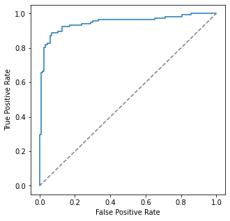

import scipy
import numpy as np
import pandas as pd
import matplotlib.pyplot as plt
import seaborn as sns
from Bio import SeqIO
from Bio.SeqUtils.ProtParam import ProteinAnalysis
from sklearn import model_selection
from sklearn.svm import SVC
from sklearn.metrics import accuracy_score4 Supervised learning
Classification for proteins based on sequence information is an important tool for their functional annotation. Supervised machine learning algorithms are a lucrative option to develop classification models. Starting with a set to protein sequences that belong to a particular class (positive dataset) and a set of protein sequences that do not belong to that particualar class (negative dataset), machines learning model is built to classify unknown protein sequences. The model trains itself based on certain set of “features” that represent the different sequences in the two datasets.
4.1 Datasets
The first step for any supervised machine learning execise is to prepare a dataset having positive and negative cases. In our case we’ll need a set of protein sequences that would represent positive and negative classes. We know that proteins are polymers made of 20 different amino acids. Proteins have been classified into different families based on their sequence similarity. For practice, we’ll use some of the dataset that available in the literature. Below are two such datasets correponding to two different binary classification model building. - Positive and negative datasets corresponding to one of the protein families are available here. - A dataset comprising of UniProt IDs of postive and negative sequences is available here.
4.2 Feature extraction
The next and one of the most important step in machine learning is feature extraction. For classifcation of protein sequences we cannot input the amino acid sequence directly to the classifier. So, we need to transform our data such that each sequence can be represent as a feature of constant length. Amino acid composition is one of the feature that can be used in this senario. Amino Acid Composition refers to frequency of each amino acid within a protein sequence. E.g. if a protein has a sequence ‘MSAARQTTRKAE’ it’s amino acid composition can be represented as a vector of length 20:
‘A’:3,‘C’:0,‘D’:0,‘E’:1,‘F’:0,‘G’:0,‘H’:0,‘I’:0,‘K’:1,‘L’:0,‘M’:1,‘N’:0,‘P’:0,‘Q’:1,‘R’:1,‘S’:1,‘T’:2,‘V’:0,‘W’:0,‘Y’:0
In this way any protein sequence can be represented as a feature vector of fixed length. This is important because the protein sequences, even within the same class, can have different number of amino acids. To start with feature extraction and model building, we’ll import the required libraries.
First, we’ll use SeqIO.parse function to read the sequence files and make a dictionary of all the sequences using the to_dict function. This dictionary would have fasta header as the keys of the dictionary and the sequence object as the corresponding values.
positive_dict = SeqIO.to_dict(SeqIO.parse("positive-aars.fasta", "fasta"))
negative_dict = SeqIO.to_dict(SeqIO.parse("negative-aars.fasta", "fasta"))
## Amino acid composition calculation##
#c1 = ProteinAnalysis("AAAASTRRRTRRAWEQWERQW").count_amino_acids()
df1 = pd.DataFrame()
for keys,values in positive_dict.items():
df1 = pd.concat([df1, pd.Series(ProteinAnalysis(str(values.seq)).get_amino_acids_percent(),name='1').to_frame().T])
for keys,values in negative_dict.items():
df1 = pd.concat([df1, pd.Series(ProteinAnalysis(str(values.seq)).get_amino_acids_percent(),name='-1').to_frame().T])
print("Number of positive samples: ", len(positive_dict))
print("Number of negative samples: ", len(negative_dict))
df1Number of positive samples: 117
Number of negative samples: 117| A | C | D | E | F | G | H | I | K | L | M | N | P | Q | R | S | T | V | W | Y | |
|---|---|---|---|---|---|---|---|---|---|---|---|---|---|---|---|---|---|---|---|---|
| 1 | 0.035928 | 0.007984 | 0.041916 | 0.131737 | 0.055888 | 0.049900 | 0.017964 | 0.081836 | 0.119760 | 0.107784 | 0.015968 | 0.037924 | 0.037924 | 0.011976 | 0.037924 | 0.055888 | 0.049900 | 0.057884 | 0.013972 | 0.029940 |
| 1 | 0.076233 | 0.004484 | 0.049327 | 0.065770 | 0.029895 | 0.082212 | 0.020927 | 0.055306 | 0.082212 | 0.074738 | 0.040359 | 0.037369 | 0.043348 | 0.056801 | 0.058296 | 0.055306 | 0.061286 | 0.053812 | 0.017937 | 0.034380 |
| 1 | 0.093333 | 0.009524 | 0.068571 | 0.080000 | 0.026667 | 0.120000 | 0.024762 | 0.059048 | 0.055238 | 0.095238 | 0.028571 | 0.015238 | 0.041905 | 0.019048 | 0.074286 | 0.060952 | 0.020952 | 0.053333 | 0.009524 | 0.043810 |
| 1 | 0.079470 | 0.036424 | 0.052980 | 0.067881 | 0.046358 | 0.072848 | 0.023179 | 0.046358 | 0.021523 | 0.117550 | 0.019868 | 0.016556 | 0.046358 | 0.039735 | 0.081126 | 0.072848 | 0.049669 | 0.072848 | 0.008278 | 0.028146 |
| 1 | 0.084158 | 0.003300 | 0.046205 | 0.094059 | 0.034653 | 0.077558 | 0.018152 | 0.061056 | 0.089109 | 0.099010 | 0.036304 | 0.057756 | 0.031353 | 0.029703 | 0.026403 | 0.047855 | 0.042904 | 0.061056 | 0.011551 | 0.047855 |
| ... | ... | ... | ... | ... | ... | ... | ... | ... | ... | ... | ... | ... | ... | ... | ... | ... | ... | ... | ... | ... |
| -1 | 0.087221 | 0.004057 | 0.050710 | 0.060852 | 0.034483 | 0.068966 | 0.020284 | 0.056795 | 0.070994 | 0.089249 | 0.020284 | 0.036511 | 0.050710 | 0.042596 | 0.054767 | 0.079108 | 0.052738 | 0.075051 | 0.004057 | 0.040568 |
| -1 | 0.067901 | 0.009259 | 0.049383 | 0.030864 | 0.027778 | 0.055556 | 0.024691 | 0.037037 | 0.030864 | 0.080247 | 0.015432 | 0.040123 | 0.111111 | 0.080247 | 0.104938 | 0.101852 | 0.058642 | 0.030864 | 0.018519 | 0.024691 |
| -1 | 0.053521 | 0.010329 | 0.056338 | 0.101408 | 0.037559 | 0.037559 | 0.014085 | 0.059155 | 0.082629 | 0.110798 | 0.025352 | 0.059155 | 0.029108 | 0.047887 | 0.061033 | 0.078873 | 0.048826 | 0.046948 | 0.005634 | 0.033803 |
| -1 | 0.038462 | 0.022869 | 0.070686 | 0.062370 | 0.062370 | 0.024948 | 0.014553 | 0.066528 | 0.060291 | 0.121622 | 0.016632 | 0.069647 | 0.027027 | 0.040541 | 0.050936 | 0.096674 | 0.061331 | 0.058212 | 0.009356 | 0.024948 |
| -1 | 0.042791 | 0.014884 | 0.055814 | 0.071628 | 0.058605 | 0.032558 | 0.020465 | 0.053953 | 0.071628 | 0.110698 | 0.010233 | 0.054884 | 0.044651 | 0.042791 | 0.059535 | 0.102326 | 0.040930 | 0.054884 | 0.013023 | 0.043721 |
234 rows × 20 columns
#correlation between different features
sns.heatmap(df1.corr())<AxesSubplot:>
4.3 Model building
Create data and label matrices.
df1_matrix = df1.iloc[:,range(20)].values ## X matrix
labels = df1.index.values ## Y matrixCreate training and testing datasets, build the model and check prediction accuracy.
# Split-out validation dataset"
validation_size = 0.20 # 20% data for testing
seed = None # change to int for reproducibility
X_train, X_validation, Y_train, Y_validation = model_selection.train_test_split(df1_matrix, labels, \
test_size=validation_size, \
random_state=seed)
new_clf = SVC()
model1 = new_clf.fit(X_train, Y_train)
Y_predicted = model1.predict(X_validation)
score1 = accuracy_score(Y_predicted, Y_validation)
print(score1)0.8085106382978723df1_matrix.shape(234, 20)4.4 Cross-validation
from sklearn.metrics import accuracy_score
from sklearn.svm import SVC
# Test options and evaluation metric
scoring = 'accuracy'
kfold = model_selection.KFold(n_splits=5)
cv_results = model_selection.cross_val_score(SVC(), df1_matrix, labels, cv=kfold, scoring=scoring)
print(cv_results)
print(cv_results.mean(), cv_results.std())[0.38297872 0.34042553 0.65957447 0.34042553 0.30434783]
0.40555041628122107 0.12943119067958725cv_resultsarray([0.38297872, 0.34042553, 0.65957447, 0.34042553, 0.30434783])SVC().get_params(){'C': 1.0,
'break_ties': False,
'cache_size': 200,
'class_weight': None,
'coef0': 0.0,
'decision_function_shape': 'ovr',
'degree': 3,
'gamma': 'scale',
'kernel': 'rbf',
'max_iter': -1,
'probability': False,
'random_state': None,
'shrinking': True,
'tol': 0.001,
'verbose': False}4.5 Hyperparameters
clf_poly = SVC(kernel='poly', degree=3)
clf_rbf = SVC(kernel='rbf', C=10)
kfold = model_selection.KFold(n_splits=5)
cv_SVM_poly_results = model_selection.cross_val_score(clf_poly, df1_matrix, labels, cv=kfold, scoring=scoring)
cv_SVM_rbf_results = model_selection.cross_val_score(clf_rbf, df1_matrix, labels, cv=kfold, scoring=scoring)
print(cv_SVM_rbf_results)
print (cv_SVM_poly_results.mean(), cv_SVM_rbf_results.mean())[0.70212766 0.65957447 0.78723404 0.5106383 0.65217391]
0.6281221091581869 0.66234967622571684.6 Grid Search
from sklearn.model_selection import GridSearchCV
tuned_parameters = [{'kernel': ['rbf'], 'gamma': [1e-3, 1e-4],
'C': [1, 10, 100, 1000, 10000]},
{'kernel': ['linear'], 'C': [1, 10, 100, 1000, 10000]},
{'kernel':['poly'], 'C': [1, 10, 100, 1000, 10000],
'degree': range(10)}]
clf_grid = GridSearchCV(SVC(), tuned_parameters, cv=5, scoring='accuracy')
clf_grid.fit(df1_matrix,labels)GridSearchCV(cv=5, estimator=SVC(),
param_grid=[{'C': [1, 10, 100, 1000, 10000],
'gamma': [0.001, 0.0001], 'kernel': ['rbf']},
{'C': [1, 10, 100, 1000, 10000], 'kernel': ['linear']},
{'C': [1, 10, 100, 1000, 10000],
'degree': range(0, 10), 'kernel': ['poly']}],
scoring='accuracy')print(clf_grid.best_params_)
#print(clf_grid.cv_results_){'C': 1, 'degree': 3, 'kernel': 'poly'}Build a SVM model using above hyperparameters and check the prediction accuracy.
clf_poly = SVC(kernel='poly',C=1, degree=3)
kfold = model_selection.KFold(n_splits=5)
cv_SVM_results = model_selection.cross_val_score(clf_poly, df1_matrix, labels, cv=kfold, scoring=scoring)
print(cv_SVM_results)
print (cv_SVM_results.mean(),cv_SVM_results.std())[0.70212766 0.65957447 0.76595745 0.40425532 0.60869565]
0.6281221091581869 0.123254516817576364.7 Confusion matrix
from collections import Counter
from sklearn.metrics import confusion_matrixclf_new = SVC(kernel='poly',degree=3, probability=True)
## Fit model to the data ##
clf_new.fit(df1_matrix,labels)
print(Counter(labels))
## Predict labels for the original data ##
clf_new_predict = clf_new.predict(df1_matrix)
print(Counter(clf_new_predict))Counter({'1': 117, '-1': 117})
Counter({'-1': 121, '1': 113})y_proba = clf_new.predict_proba(df1_matrix)
y_proba[0]array([0.28550858, 0.71449142])type(clf_new_predict)numpy.ndarraycm = confusion_matrix(labels,clf_new_predict)
print(cm)
fig,ax= plt.subplots()
sns.heatmap(cm, square=True, annot=True, fmt='g', cbar=False, ax=ax)
ax.set_xlabel('Predicted labels')
ax.set_ylabel('True labels')
ax.xaxis.set_ticklabels(['positive', 'negative'])
ax.yaxis.set_ticklabels(['positive', 'negative'])
plt.show()[[108 9]
[ 13 104]]
4.8 ROC Curve
from sklearn.metrics import roc_curve
from sklearn.metrics import RocCurveDisplay
fpr, tpr, _ = roc_curve(labels.astype('int'), y_proba[:, 1])#clf_new_predict.astype('int'))
roc_display = RocCurveDisplay(fpr=fpr, tpr=tpr).plot()
roc_display.figure_.set_size_inches(5,5)
plt.plot([0, 1], [0, 1], color = 'grey', linestyle="dashed")
plt.show()
# Plots the ROC curve using the sklearn methods - Good plot
#plot_sklearn_roc_curve(y_test, y_proba[:, 1])
Exercise
Extract another feature - Di-Peptide Composition (DPC)
For each sequence calculate the frequency of pairwaise occurrence of amino acids. The length of the feature vector for each sequence would be 400 (20 x 20). Construct a classification model using DPC as a feature and compare the results with classification using amino acid composition.
import itertools
aa_list = ['A','C','D','E','F','G','H','I','K','L','M','N','P','Q','R','S','T','V','W','Y']## Create a series of dipeptides
dpc_series = pd.Series(name='1',dtype=float)
for x in itertools.product(aa_list,aa_list):
dpc_series[''.join([''.join(x)])] = 0df_dpc = pd.DataFrame([])
for keys,values in positive_dict.items():
dpc_series_copy = dpc_series.copy()
# print (values.seq)
dpc_seq = [str(values.seq[i:i+2]) for i in range(len(values.seq))]
del dpc_seq[-1]
for x in dpc_seq:
dpc_series_copy[x] += 1
dpc_series_copy /= len(values.seq)
dpc_series_copy *= 100
df_dpc = df_dpc.append(dpc_series_copy)
#dpc_series_copydf_dpc| AA | AC | AD | AE | AF | AG | AH | AI | AK | AL | ... | YM | YN | YP | YQ | YR | YS | YT | YV | YW | YY | |
|---|---|---|---|---|---|---|---|---|---|---|---|---|---|---|---|---|---|---|---|---|---|
| 1 | 0.399202 | 0.000000 | 0.000000 | 0.399202 | 0.399202 | 0.399202 | 0.199601 | 0.199601 | 0.598802 | 0.199601 | ... | 0.199601 | 0.000000 | 0.598802 | 0.199601 | 0.000000 | 0.199601 | 0.000000 | 0.000000 | 0.0 | 0.000000 |
| 1 | 1.345291 | 0.000000 | 0.149477 | 0.747384 | 0.149477 | 0.597907 | 0.149477 | 0.298954 | 0.896861 | 0.448430 | ... | 0.000000 | 0.000000 | 0.298954 | 0.448430 | 0.000000 | 0.000000 | 0.298954 | 0.597907 | 0.0 | 0.000000 |
| 1 | 0.571429 | 0.000000 | 0.761905 | 0.761905 | 0.380952 | 1.142857 | 0.190476 | 0.380952 | 0.571429 | 1.142857 | ... | 0.000000 | 0.000000 | 0.000000 | 0.000000 | 0.761905 | 0.190476 | 0.190476 | 0.190476 | 0.0 | 0.000000 |
| 1 | 0.331126 | 0.165563 | 0.331126 | 0.496689 | 0.662252 | 0.662252 | 0.331126 | 0.000000 | 0.165563 | 0.496689 | ... | 0.000000 | 0.165563 | 0.165563 | 0.331126 | 0.827815 | 0.331126 | 0.000000 | 0.165563 | 0.0 | 0.000000 |
| 1 | 0.495050 | 0.000000 | 0.660066 | 0.990099 | 0.165017 | 0.660066 | 0.000000 | 0.165017 | 0.825083 | 0.825083 | ... | 0.165017 | 0.495050 | 0.165017 | 0.165017 | 0.165017 | 0.165017 | 0.165017 | 0.330033 | 0.0 | 0.330033 |
| ... | ... | ... | ... | ... | ... | ... | ... | ... | ... | ... | ... | ... | ... | ... | ... | ... | ... | ... | ... | ... | ... |
| 1 | 0.790514 | 0.000000 | 0.592885 | 0.395257 | 0.592885 | 0.592885 | 0.197628 | 0.197628 | 1.185771 | 0.395257 | ... | 0.000000 | 0.000000 | 0.197628 | 0.000000 | 0.395257 | 0.197628 | 0.000000 | 0.000000 | 0.0 | 0.000000 |
| 1 | 0.401606 | 0.000000 | 0.401606 | 0.200803 | 1.004016 | 0.200803 | 0.401606 | 0.000000 | 0.803213 | 0.200803 | ... | 0.000000 | 0.000000 | 0.000000 | 0.401606 | 0.200803 | 0.602410 | 0.200803 | 0.803213 | 0.0 | 0.401606 |
| 1 | 2.923977 | 0.000000 | 1.754386 | 1.949318 | 1.169591 | 0.779727 | 0.194932 | 0.389864 | 0.000000 | 1.559454 | ... | 0.000000 | 0.000000 | 0.194932 | 0.000000 | 0.584795 | 0.000000 | 0.000000 | 0.000000 | 0.0 | 0.000000 |
| 1 | 0.000000 | 0.000000 | 0.114416 | 0.114416 | 0.114416 | 0.114416 | 0.114416 | 0.114416 | 0.343249 | 0.114416 | ... | 0.000000 | 0.228833 | 0.228833 | 0.000000 | 0.228833 | 0.228833 | 0.228833 | 0.228833 | 0.0 | 0.228833 |
| 1 | 0.000000 | 0.142653 | 0.285307 | 0.000000 | 0.570613 | 0.000000 | 0.285307 | 0.855920 | 0.570613 | 1.711840 | ... | 0.000000 | 0.000000 | 0.142653 | 0.427960 | 0.000000 | 0.000000 | 0.142653 | 0.000000 | 0.0 | 0.285307 |
117 rows × 400 columns